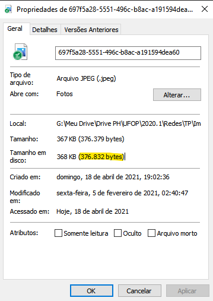

Quais opções TCP são transportadas nos pacotes SYN para o seu rastreamento?
No trace capturado os frames que continham o SYN, o campo de Opções que tinha 8 Bytes, era subdividido em 4 partes:
Foi aplicado um filtro "tcp.srcport == 80 && tcp.ack" assim foram listados todos os pacotes de origem do server que está enviando o arquivo. Uma vez que a conexão está funcionando sem problemas, foram enviados ao total 339 pacotes, totalizando 395174 Bytes. Analisando os dados foi possível identificar uma média de 204,4 Pacotes/s e 1906Kb/s.
Foi aplicado um filtro "tcp.segment_data" onde são mostrados apenas os frames que continham dados do arquivo de transferência. Com esse filtro aplicado então foi feita uma análise dos dados listados. Analisando em média quantos Bytes presentes nos pacotes não pertecem ao arquivo, e observando que praticamente todos eles contêm 54 Bytes de dados não pertencentes no arquivo e multiplicando pelo total de pacotes que o arquivo está presente (337 pacotes) temos que 18198 Bytes presentes nesses pacotes não são do arquivo, então subtraindo de 395KB temos que o tamanho do arquivo é de aproximadamente 376.8KB que inclusive se olharmos nas propriedades do arquivo será exatamente esse o valor encontrado.

Agora que sabemos o tamanho do arquivo e temos o total de Bytes de download podemos dizer que a porcentagem conteúdo na taxa de download é de aproximadamente 95,36%